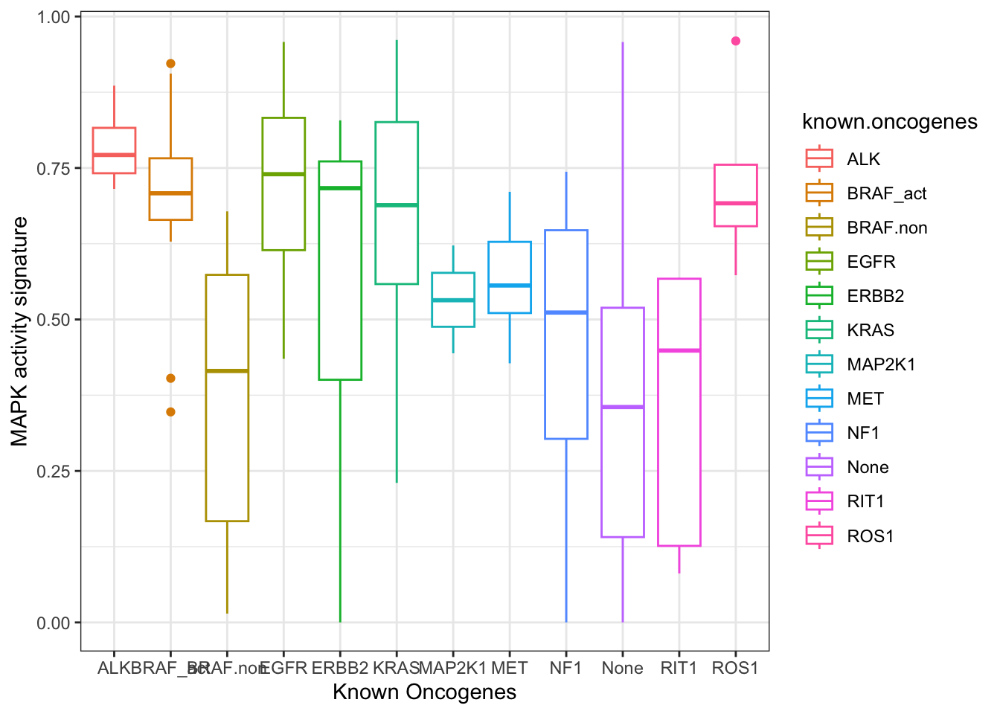

Follow the procedure using the interface to load the file TCGA_LUAD_subset.tsv and name the variable clinical or by coding
Code
# or you can try to adapt this codeclinical <-read.table("data/TCGA_LUAD_subset.tsv",sep="\t",head=T)head(clinical)
sampleID known.oncogenes Purity pathologic_stage gender
1 TCGA.05.4249.01 KRAS 0.49 Stage IB MALE
2 TCGA.05.4250.01 KRAS 0.50 Stage IIIA FEMALE
3 TCGA.05.4384.01 RIT1 0.49 Stage IIIA MALE
4 TCGA.05.4389.01 BRAF_act 0.48 Stage IA MALE
5 TCGA.05.4390.01 KRAS 0.57 Stage IB FEMALE
6 TCGA.05.4395.01 KRAS 0.61 Stage IIIB MALE
tobacco_smoking_history signature_MAPK
1 Current reformed smoker for > 15 years 0.9298746
2 Current reformed smoker for < or = 15 years 0.4811406
3 Current reformed smoker for > 15 years 0.5672071
4 Current reformed smoker for > 15 years 0.3474326
5 Current reformed smoker for < or = 15 years 0.8763612
6 Current reformed smoker for > 15 years 0.5578706
Install ggplot2 and load the library
Code
install.packages("ggplot2")library(ggplot2)
Display your first plot step by step
Before unfolding the code and answers boxes, try to find the solution from what we have seen in the lecture or by searching on the web, it should become an automatism, no one knows everything !
Use the function ggplot alone.
Code
ggplot()
A default grey background is displayed.
Display the axis: Add the data and choose the x and y axis from the column names that you can display using colnames. For instance, we want to evaluate the distribution of the MAPK activity signature (y-axis) in function of the known oncogenes (x-axis).
All the boxplots in red and filled with grey. You can search for how colors are named in R if you want to try your favorite colors. Many palettes are available through dedicated packages. (My favorite function to call for colors is colours() systematically installed and loaded with R, you can try some of my preferred ones: colours()[124], colours()[613], colours()[53], colours()[144]).
Key words to write on your favorite browser
R ggplot2 colors
Code
# the fonction colours() returns the name of the colorcolours()[124]
[1] "deepskyblue3"
Code
# use the function c() to concat several elements, we call it a vectorc(colours()[613], colours()[53], colours()[144])
You can play globally on the color of the borders (parameter color), the filling (parameter fill), the transparency (parameter alpha)) and more. The accessible aesthetics can vary according to the geometric shape, form. instance for lines you will have the width and the type.
Change the color of the boxplots in function of the known oncogenes
During the previous step the same colors have been applied to all boxplots, the goal here is to use the information contained in a column of our dataset (known.oncogenes). This is part of the aesthetics. Based on the current code, how would you add this information (2 possibilities) ?
Option 1
Code
# Directly in the aesthetics of the ggplot function that will be accessible for all# layersggplot(data = clinical, aes(x=known.oncogenes, y=signature_MAPK, color=known.oncogenes)) +# Add the new aesthetics colorgeom_boxplot() +# remove the global colorslabs(x="Known Oncogenes", y="MAPK activity signature") +theme_bw()
Option 2
Code
# Within the geom_boxplot() function which will define the aesthetics # with aes() only for this layerggplot(data = clinical, aes(x=known.oncogenes, y=signature_MAPK)) +geom_boxplot(aes(color=known.oncogenes)) +labs(x="Known Oncogenes", y="MAPK activity signature") +theme_bw()

By default the colors are not very contrasted … you can customize them by i) defining your own palette optionally by attributing a color to each category ; ii) find a predefined palette to help you to define the colors. To do this task, you will need to add a new layer by using a function that help in scaling the colors manually.
i) To define your own palette, you need to concatenate as many colors as the number of categories, here 12 colors. You can assign the colors to the categories by building a named vector.
Code
# We use the function c(), to name the elements of a vector you use the name you want# and you assign the values with the sign =palette.known.onco <-c(ALK="darkgrey",BRAF_act=colours()[613],BRAF.non=colours()[11],EGFR=colours()[128],ERBB2=colours()[76],MAP2K1=colours()[509],MET=colours()[121],NF1=colours()[468],None=colours()[92],RIT1=colours()[642],ROS1=colours()[34],KRAS="black")# Display the contentpalette.known.onco
ii) R natively provides a few continuous color palettes which means that you do not need to install and load any library. Also when you install ggplot2, it installs some dependencies (packages that ggplot2 needs to work properly), among them it installs the packages RColorBrewer, viridis, paletteer, khroma etc. and have implemented specific functions to use the palettes, it means that those packages are installed but not loaded. You can see which functions are available when typing scale_color_ on RStudio. If you want to use the functions from these packages you need to load the package but it is not mandatory. Finally, a lot more palettes are available through packages.
There is two ways, the first one is very simple and consists in inverting x and y aesthetics, the second one involves the addition of a new layer to flip the axis (preferred option and it provides more flexibility). Lets keep our own color palette palette.known.onco
This task consist of adding a new layer containing the points colored by known oncogenes. Which function should we use ? Note that there are two answers but one is more suitable for boxplot as it is adding some random noise to the positions in order to avoid overlaps.
Try to change the shape in plain triangle for all points and decrease opacity by half and to manage the size according to the tumor purity (column Purity).